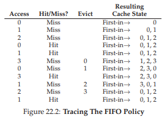
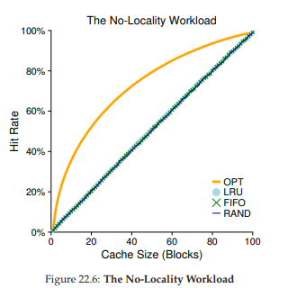
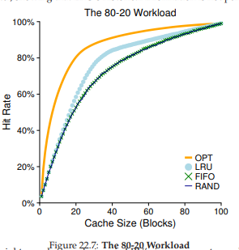

22. Vượt ra ngoài Physical Memory: Các chính sách
Trong một virtual memory manager (bộ quản lý bộ nhớ ảo), mọi thứ trở nên đơn giản khi hệ thống có nhiều bộ nhớ trống. Khi xảy ra page fault (lỗi trang), hệ điều hành tìm một free page (trang trống) trong danh sách các trang trống và gán nó cho trang gây lỗi. Chúc mừng nhé, Operating System (hệ điều hành), bạn lại xử lý thành công rồi.
Tuy nhiên, mọi thứ trở nên thú vị hơn khi bộ nhớ trống còn rất ít. Trong trường hợp này, áp lực bộ nhớ (memory pressure) buộc OS phải bắt đầu paging out (ghi ra đĩa) một số trang để giải phóng chỗ cho các trang đang được sử dụng tích cực. Việc quyết định trang nào (hoặc các trang nào) sẽ bị loại bỏ (evict) được gói gọn trong replacement policy (chính sách thay thế) của OS; về mặt lịch sử, đây là một trong những quyết định quan trọng nhất mà các hệ thống virtual memory đời đầu phải đưa ra, vì các hệ thống cũ thường có rất ít physical memory (bộ nhớ vật lý). Ít nhất, đây là một tập hợp các chính sách thú vị mà chúng ta nên tìm hiểu kỹ hơn. Và do đó, vấn đề đặt ra là:
THE CRUX: LÀM THẾ NÀO ĐỂ QUYẾT ĐỊNH TRANG NÀO SẼ BỊ LOẠI BỎ
Làm thế nào để OS quyết định trang nào (hoặc các trang nào) sẽ bị loại khỏi bộ nhớ? Quyết định này được thực hiện bởi replacement policy của hệ thống, thường tuân theo một số nguyên tắc chung (sẽ được thảo luận bên dưới) nhưng cũng bao gồm một số tinh chỉnh để tránh các hành vi bất thường trong các trường hợp đặc biệt (corner-case behaviors).
22.1 Quản lý Cache
Trước khi đi sâu vào các chính sách, chúng ta cần mô tả chi tiết hơn vấn đề cần giải quyết. Vì main memory (bộ nhớ chính) chỉ chứa một tập con của tất cả các trang trong hệ thống, nên có thể coi nó như một cache cho các trang của virtual memory. Do đó, mục tiêu của chúng ta khi chọn một replacement policy cho cache này là giảm thiểu số lượng cache miss, tức là giảm số lần phải nạp một trang từ đĩa. Ngược lại, cũng có thể coi mục tiêu là tối đa hóa số lượng cache hit, tức là số lần một trang được truy cập và tìm thấy ngay trong bộ nhớ.
Biết được số lượng cache hit và cache miss cho phép chúng ta tính average memory access time (AMAT) — thời gian truy cập bộ nhớ trung bình — cho một chương trình (một chỉ số mà các kiến trúc sư máy tính thường tính cho hardware cache [HP06]). Cụ thể, với các giá trị này, ta có thể tính AMAT của một chương trình như sau:
$$ \text{AMAT} = T_M + (P_{Miss} \cdot T_D) $$
(22.1)
Trong đó:
- $T_M$ là chi phí truy cập bộ nhớ
- $T_D$ là chi phí truy cập đĩa
- $P_{Miss}$ là xác suất không tìm thấy dữ liệu trong cache (miss).
Giá trị $P_{Miss}$ nằm trong khoảng từ 0.0 đến 1.0, và đôi khi chúng ta dùng tỷ lệ phần trăm miss thay vì xác suất (ví dụ: tỷ lệ miss 10% nghĩa là $P_{Miss} = 0.10$). Lưu ý rằng bạn luôn phải trả chi phí truy cập dữ liệu trong bộ nhớ; tuy nhiên, khi bị miss, bạn phải trả thêm chi phí nạp dữ liệu từ đĩa.
Ví dụ:
Giả sử chúng ta có một máy với address space (không gian địa chỉ) rất nhỏ: 4KB, với kích thước trang (page size) là 256 byte. Khi đó, một virtual address (địa chỉ ảo) sẽ có hai thành phần:
- VPN (Virtual Page Number – số trang ảo) 4 bit (các bit có trọng số cao nhất)
- Offset 8 bit (các bit có trọng số thấp nhất).
Như vậy, một process (tiến trình) trong ví dụ này có thể truy cập $2^4 = 16$ trang ảo. Giả sử tiến trình này tạo ra chuỗi các truy cập bộ nhớ (memory references) như sau (theo dạng địa chỉ ảo):
0x000, 0x100, 0x200, 0x300, 0x400, 0x500, 0x600, 0x700, 0x800, 0x900
Các địa chỉ ảo này trỏ đến byte đầu tiên của mỗi trang trong 10 trang đầu tiên của không gian địa chỉ (số trang chính là chữ số hex đầu tiên của địa chỉ ảo).
Giả sử thêm rằng mọi trang ngoại trừ virtual page 3 đã có sẵn trong bộ nhớ. Khi đó, chuỗi truy cập bộ nhớ sẽ có hành vi:
hit, hit, hit, miss, hit, hit, hit, hit, hit, hit
Ta có thể tính hit rate (tỷ lệ hit) là 90%, vì 9 trên 10 lần truy cập tìm thấy dữ liệu trong bộ nhớ. Miss rate do đó là 10% ($P_{Miss} = 0.1$). Nói chung, $P_{Hit} + P_{Miss} = 1.0$; tỷ lệ hit cộng tỷ lệ miss luôn bằng 100%.
Tính AMAT:
Giả sử chi phí truy cập bộ nhớ ($T_M$) là khoảng 100 nanosecond, và chi phí truy cập đĩa ($T_D$) là khoảng 10 millisecond. Khi đó:
$$
\text{AMAT} = 100\text{ns} + 0.1 \cdot 10\text{ms}
= 100\text{ns} + 1\text{ms}
= 1.0001\ \text{ms} \ (\approx 1\ \text{millisecond})
$$
Nếu tỷ lệ hit là 99.9% ($P_{Miss} = 0.001$), kết quả sẽ khác hẳn:
$$
\text{AMAT} = 100\text{ns} + 0.001 \cdot 10\text{ms}
= 100\text{ns} + 10\ \mu\text{s}
\approx 10.1\ \mu\text{s}
$$
Tức là nhanh hơn khoảng 100 lần. Khi tỷ lệ hit tiến gần 100%, AMAT tiến gần đến 100 nanosecond.
Rõ ràng, như bạn thấy trong ví dụ này, chi phí truy cập đĩa trong các hệ thống hiện đại là rất lớn, đến mức chỉ cần một tỷ lệ miss rất nhỏ cũng sẽ nhanh chóng chi phối toàn bộ AMAT của chương trình. Vì vậy, chúng ta cần tránh càng nhiều miss càng tốt, nếu không tốc độ sẽ bị giới hạn bởi tốc độ của đĩa. Một cách để cải thiện là phát triển một replacement policy thông minh — và đó chính là điều chúng ta sẽ làm tiếp theo.
22.2 Chính sách thay thế tối ưu (Optimal Replacement Policy)
Để hiểu rõ hơn cách một replacement policy (chính sách thay thế) cụ thể hoạt động, sẽ rất hữu ích nếu so sánh nó với replacement policy tốt nhất có thể. Thật vậy, một chính sách tối ưu như vậy đã được Belady phát triển từ nhiều năm trước [B66] (ông ban đầu gọi nó là MIN). Optimal replacement policy (chính sách thay thế tối ưu) dẫn đến số lượng miss (lỗi cache) ít nhất có thể. Belady đã chỉ ra rằng một cách tiếp cận đơn giản (nhưng thật không may là rất khó triển khai!) — thay thế trang sẽ được truy cập xa nhất trong tương lai — chính là chính sách tối ưu, giúp giảm thiểu tối đa số lượng cache miss.
TIP: SO SÁNH VỚI CHÍNH SÁCH TỐI ƯU LÀ HỮU ÍCH
Mặc dù chính sách tối ưu không thực tế để áp dụng trực tiếp trong hệ thống thật, nhưng nó cực kỳ hữu ích như một điểm tham chiếu trong mô phỏng hoặc các nghiên cứu khác. Việc nói rằng thuật toán mới của bạn đạt hit rate (tỷ lệ hit) 80% sẽ không có nhiều ý nghĩa nếu đứng riêng lẻ; nhưng nếu nói rằng chính sách tối ưu đạt 82% hit rate (và do đó cách tiếp cận mới của bạn khá gần với tối ưu) thì kết quả sẽ có ý nghĩa hơn và có ngữ cảnh rõ ràng. Vì vậy, trong bất kỳ nghiên cứu nào, việc biết được giá trị tối ưu cho phép bạn so sánh tốt hơn, chỉ ra mức cải thiện vẫn còn khả thi, và cũng giúp bạn biết khi nào nên dừng tối ưu hóa chính sách của mình vì nó đã đủ gần với lý tưởng [AD03].
Hy vọng rằng trực giác đằng sau chính sách tối ưu là dễ hiểu. Hãy nghĩ như thế này: nếu bạn buộc phải loại bỏ một trang, tại sao không loại bỏ trang mà bạn sẽ cần đến muộn nhất trong tương lai? Bằng cách làm như vậy, bạn đang ngầm khẳng định rằng tất cả các trang khác trong cache đều quan trọng hơn trang ở xa nhất đó. Lý do điều này đúng rất đơn giản: bạn sẽ truy cập các trang khác trước khi truy cập trang ở xa nhất.
Hãy cùng theo dõi một ví dụ đơn giản để hiểu các quyết định mà chính sách tối ưu đưa ra. Giả sử một chương trình truy cập chuỗi các virtual page (trang ảo) như sau:
0, 1, 2, 0, 1, 3, 0, 3, 1, 2, 1
Figure 22.1 dưới đây minh họa hành vi của chính sách tối ưu, giả sử cache có thể chứa tối đa 3 trang.
| Access | Hit/Miss? | Evict | Resulting Cache State |
|---|---|---|---|
| 0 | Miss | 0 | |
| 1 | Miss | 0, 1 | |
| 2 | Miss | 0, 1, 2 | |
| 0 | Hit | 0, 1, 2 | |
| 1 | Hit | 0, 1, 2 | |
| 3 | Miss | 2 | 0, 1, 3 |
| 0 | Hit | 0, 1, 3 | |
| 3 | Hit | 0, 1, 3 | |
| 1 | Hit | 0, 1, 3 | |
| 2 | Miss | 3 | 0, 1, 2 |
| 1 | Hit | 0, 1, 2 |
Hình 22.1: Truy vết thuật toán thay thế tối ưu (Tracing The Optimal Policy)
Trong hình, bạn có thể thấy các hành động sau. Không có gì ngạc nhiên, ba lần truy cập đầu tiên đều là miss (trượt), vì cache bắt đầu ở trạng thái rỗng; loại miss này đôi khi được gọi là cold-start miss (miss khởi động lạnh) hoặc compulsory miss (miss bắt buộc). Sau đó, chúng ta lại truy cập các page 0 và 1, cả hai đều hit (trúng) trong cache. Cuối cùng, chúng ta gặp một miss khác (với page 3), nhưng lần này cache đã đầy; cần phải thay thế một page! Câu hỏi đặt ra: nên thay thế page nào?
Với optimal policy (chính sách tối ưu), ta sẽ xem xét tương lai của từng page hiện có trong cache (0, 1 và 2), và thấy rằng page 0 sẽ được truy cập gần như ngay lập tức, page 1 được truy cập muộn hơn một chút, và page 2 được truy cập xa nhất trong tương lai. Do đó, optimal policy có lựa chọn dễ dàng: evict (loại bỏ) page 2, dẫn đến cache chứa các page 0, 1 và 3. Ba lần truy cập tiếp theo đều là hit, nhưng sau đó chúng ta truy cập page 2 (đã bị loại bỏ từ lâu) và gặp một miss khác.
Tại đây, optimal policy lại xem xét tương lai của từng page trong cache (0, 1 và 3), và nhận thấy rằng miễn là không loại bỏ page 1 (sắp được truy cập), thì sẽ ổn. Ví dụ minh họa cho thấy page 3 bị loại bỏ, mặc dù page 0 cũng là một lựa chọn hợp lý. Cuối cùng, ta hit vào page 1 và kết thúc chuỗi truy vết.
ASIDE: TYPES OF CACHE MISSES
(Các loại cache miss)
Trong lĩnh vực computer architecture (kiến trúc máy tính), các kiến trúc sư đôi khi phân loại miss thành ba loại: compulsory, capacity, và conflict misses, đôi khi gọi là Three C’s [H87].
- Compulsory miss (hoặc cold-start miss [EF78]) xảy ra vì cache ban đầu rỗng và đây là lần truy cập đầu tiên tới mục dữ liệu.
- Capacity miss xảy ra vì cache hết chỗ và phải loại bỏ một mục để đưa mục mới vào.
- Conflict miss xuất hiện trong phần cứng do giới hạn về vị trí một mục có thể được đặt trong cache phần cứng, nguyên nhân từ set-associativity; loại miss này không xảy ra trong OS page cache vì cache này luôn fully-associative (hoàn toàn kết hợp), tức là không có giới hạn về vị trí đặt một page trong bộ nhớ. Xem H&P [HP06] để biết chi tiết.
Chúng ta cũng có thể tính hit rate (tỉ lệ trúng) cho cache: với 6 hit và 5 miss, hit rate là:
$$ \frac{\text{Hits}}{\text{Hits} + \text{Misses}} = \frac{6}{6+5} $$
tức là 54,5%. Bạn cũng có thể tính hit rate modulo compulsory misses (tức là bỏ qua miss đầu tiên đối với một page nhất định), kết quả là 85,7%.
Tuy nhiên, như chúng ta đã thấy trong việc phát triển các scheduling policy (chính sách lập lịch), tương lai thường không thể biết trước; bạn không thể xây dựng optimal policy cho một general-purpose operating system (hệ điều hành đa dụng)1. Do đó, khi phát triển một chính sách thực tế, có thể triển khai, chúng ta sẽ tập trung vào các phương pháp khác để quyết định page nào cần loại bỏ. Optimal policy sẽ chỉ đóng vai trò là điểm so sánh, để biết chúng ta đang tiến gần đến “hoàn hảo” đến mức nào.
Nếu bạn làm được, hãy cho chúng tôi biết! Chúng ta có thể cùng nhau trở nên giàu có. Hoặc, giống như các nhà khoa học “phát hiện” ra cold fusion (nhiệt hạch lạnh), sẽ bị chế giễu và mỉa mai rộng rãi [FP89].
22.3 A Simple Policy: FIFO
(Một chính sách đơn giản: FIFO)
Nhiều hệ thống đời đầu đã tránh sự phức tạp của việc cố gắng tiếp cận optimal và sử dụng các replacement policy (chính sách thay thế) rất đơn giản. Ví dụ, một số hệ thống sử dụng FIFO (first-in, first-out — vào trước, ra trước), trong đó các page được đưa vào một queue (hàng đợi) khi chúng vào hệ thống; khi cần thay thế, page ở đuôi hàng đợi (page “first-in”) sẽ bị loại bỏ. FIFO có một ưu điểm lớn: rất dễ triển khai.
Hãy xem FIFO hoạt động thế nào với chuỗi truy cập ví dụ của chúng ta (Figure 22.2, trang 5). Chúng ta lại bắt đầu với ba compulsory miss cho các page 0, 1 và 2, sau đó hit vào cả 0 và 1. Tiếp theo, page 3 được truy cập, gây ra một miss; quyết định thay thế với FIFO rất dễ: chọn page “first-in” (trạng thái cache trong hình được giữ theo thứ tự FIFO, với page vào trước nằm bên trái), đó là page 0.
Không may, lần truy cập tiếp theo là page 0, gây ra một miss khác và thay thế (loại bỏ page 1). Sau đó, chúng ta hit vào page 3, nhưng miss ở page 1 và 2, và cuối cùng hit vào page 1.

Hình 22.2: Truy vết chính sách FIFO (Tracing The FIFO Policy)
So sánh FIFO với optimal, FIFO hoạt động kém hơn đáng kể: hit rate (tỉ lệ trúng) chỉ đạt 36,4% (hoặc 57,1% nếu loại trừ compulsory misses — các miss bắt buộc). FIFO hoàn toàn không thể xác định tầm quan trọng của các block: ngay cả khi page 0 đã được truy cập nhiều lần, FIFO vẫn loại bỏ nó, chỉ vì đó là page được đưa vào bộ nhớ đầu tiên.
ASIDE: BELADY’S ANOMALY
(Hiện tượng bất thường của Belady)
Belady (tác giả của optimal policy) và các đồng nghiệp đã tìm ra một chuỗi tham chiếu bộ nhớ có hành vi khá bất ngờ [BNS69]. Chuỗi memory-reference (tham chiếu bộ nhớ) là:
1, 2, 3, 4, 1, 2, 5, 1, 2, 3, 4, 5.
Replacement policy (chính sách thay thế) mà họ nghiên cứu là FIFO. Điều thú vị: tỉ lệ hit của cache thay đổi thế nào khi tăng kích thước cache từ 3 lên 4 page.Thông thường, bạn sẽ mong tỉ lệ hit của cache tăng (cải thiện) khi cache lớn hơn. Nhưng trong trường hợp này, với FIFO, nó lại giảm! Hãy tự tính số hit và miss để kiểm chứng. Hành vi kỳ lạ này thường được gọi là Belady’s Anomaly (điều này khiến các đồng tác giả của ông khá bối rối).
Một số chính sách khác, như LRU, không gặp vấn đề này. Bạn đoán được tại sao không? Thực tế, LRU có một đặc tính gọi là stack property [M+70]. Với các thuật toán có đặc tính này, một cache kích thước N+1 tự nhiên sẽ bao gồm toàn bộ nội dung của cache kích thước N. Do đó, khi tăng kích thước cache, tỉ lệ hit sẽ giữ nguyên hoặc tăng. FIFO và Random (cùng một số chính sách khác) rõ ràng không tuân theo stack property, và do đó dễ gặp hành vi bất thường.
22.4 Another Simple Policy: Random
(Một chính sách đơn giản khác: Random)
Một chính sách thay thế tương tự là Random, chính sách này đơn giản chọn ngẫu nhiên một page để thay thế khi bộ nhớ bị áp lực. Random có các đặc điểm tương tự FIFO: dễ triển khai, nhưng không thực sự cố gắng thông minh trong việc chọn block để loại bỏ. Hãy xem Random hoạt động thế nào với chuỗi tham chiếu ví dụ nổi tiếng của chúng ta (Figure 22.3).

Hình 22.3: Truy vết chính sách Random (Tracing The Random Policy)
Tất nhiên, hiệu quả của Random phụ thuộc hoàn toàn vào việc nó may mắn (hoặc xui xẻo) thế nào khi chọn. Trong ví dụ trên, Random hoạt động tốt hơn một chút so với FIFO, và kém hơn một chút so với optimal. Thực tế, chúng ta có thể chạy thử nghiệm Random hàng nghìn lần và xác định hiệu quả trung bình của nó.

Hình 22.4: Hiệu năng của Random qua 10.000 lần thử (Random Performance Over 10,000 Trials)
Như bạn thấy, đôi khi (hơn 40% số lần), Random tốt ngang optimal, đạt 6 hit trên chuỗi truy vết ví dụ; đôi khi nó tệ hơn nhiều, chỉ đạt 2 hit hoặc ít hơn. Hiệu quả của Random phụ thuộc vào “vận may” khi chọn.
22.5 Using History: LRU
(Sử dụng lịch sử: LRU)
Thật không may, bất kỳ chính sách nào đơn giản như FIFO hoặc Random đều có khả năng gặp một vấn đề chung: nó có thể loại bỏ một page quan trọng, page này sắp được truy cập lại. FIFO loại bỏ page được đưa vào đầu tiên; nếu đó là page chứa code hoặc data structure (cấu trúc dữ liệu) quan trọng, nó vẫn bị loại bỏ, mặc dù sắp được nạp lại. Do đó, FIFO, Random và các chính sách tương tự khó có thể tiệm cận optimal; cần một cách tiếp cận thông minh hơn.
Giống như khi xây dựng scheduling policy (chính sách lập lịch), để cải thiện khả năng dự đoán tương lai, chúng ta lại dựa vào quá khứ và sử dụng lịch sử làm hướng dẫn. Ví dụ, nếu một chương trình đã truy cập một page gần đây, nhiều khả năng nó sẽ truy cập lại page đó trong tương lai gần.
Một loại thông tin lịch sử mà page-replacement policy (chính sách thay thế trang) có thể sử dụng là frequency (tần suất); nếu một page đã được truy cập nhiều lần, có lẽ không nên thay thế nó vì rõ ràng nó có giá trị. Một thuộc tính thường được sử dụng hơn là recency of access (độ gần đây của lần truy cập); page được truy cập càng gần đây thì càng có khả năng sẽ được truy cập lại.
Nhóm chính sách này dựa trên cái gọi là principle of locality (nguyên lý địa phương) [D70], về cơ bản là một quan sát về chương trình và hành vi của chúng. Nguyên lý này nói một cách đơn giản rằng các chương trình có xu hướng truy cập một số đoạn code nhất định (ví dụ: trong vòng lặp) và các cấu trúc dữ liệu (ví dụ: mảng được truy cập trong vòng lặp) khá thường xuyên; do đó, chúng ta nên sử dụng lịch sử để xác định page nào quan trọng và giữ chúng trong bộ nhớ khi cần loại bỏ page khác.
Từ đó, một nhóm các thuật toán đơn giản dựa trên lịch sử ra đời:
- Least-Frequently-Used (LFU): thay thế page được sử dụng ít thường xuyên nhất khi cần loại bỏ.
- Least-Recently-Used (LRU): thay thế page được sử dụng ít gần đây nhất.
Các thuật toán này rất dễ nhớ: chỉ cần biết tên là bạn biết ngay nó làm gì — một đặc điểm tuyệt vời cho tên gọi.
Để hiểu rõ hơn về LRU, hãy xem LRU hoạt động thế nào với chuỗi tham chiếu ví dụ của chúng ta. Figure 22.5 (trang 7) cho thấy kết quả. Từ hình, bạn có thể thấy LRU sử dụng lịch sử để hoạt động tốt hơn các chính sách stateless (không lưu trạng thái) như Random hoặc FIFO. Trong ví dụ, LRU loại bỏ page 2 khi lần đầu cần thay thế, vì page 0 và 1 đã được truy cập gần đây hơn. Sau đó, nó thay thế page 0 vì page 1 và 3 đã được truy cập gần đây hơn. Trong cả hai trường hợp, quyết định của LRU — dựa trên lịch sử — hóa ra là chính xác, và các lần truy cập tiếp theo đều là hit. Do đó, trong ví dụ của chúng ta, LRU hoạt động tốt nhất có thể, đạt hiệu năng ngang với optimal2.
Trong trường hợp này, LRU đạt hiệu năng tối đa vì chuỗi truy cập phù hợp với giả định của nguyên lý địa phương.

Hình 22.5: Truy vết chính sách LRU (Tracing The LRU Policy)
ASIDE: TYPES OF LOCALITY
(Các loại tính cục bộ)
Có hai loại locality (tính cục bộ) mà các chương trình thường thể hiện:
- Loại thứ nhất gọi là spatial locality (tính cục bộ không gian), phát biểu rằng nếu một page P được truy cập, nhiều khả năng các page xung quanh nó (ví dụ P − 1 hoặc P + 1) cũng sẽ được truy cập.
- Loại thứ hai là temporal locality (tính cục bộ thời gian), phát biểu rằng các page đã được truy cập gần đây nhiều khả năng sẽ được truy cập lại trong tương lai gần.
Giả định về sự tồn tại của các loại locality này đóng vai trò lớn trong các hệ thống phân cấp cache của phần cứng, vốn triển khai nhiều cấp độ cache cho lệnh, dữ liệu và dịch địa chỉ để giúp chương trình chạy nhanh khi locality tồn tại.
Tất nhiên, principle of locality (nguyên lý cục bộ) — như thường được gọi — không phải là một quy tắc cứng nhắc mà mọi chương trình đều phải tuân theo. Thực tế, một số chương trình truy cập bộ nhớ (hoặc đĩa) theo cách khá ngẫu nhiên và hầu như không thể hiện locality trong luồng truy cập của chúng. Do đó, mặc dù locality là điều tốt cần ghi nhớ khi thiết kế cache (dù là phần cứng hay phần mềm), nó không đảm bảo thành công. Thay vào đó, đây là một heuristic (kinh nghiệm) thường tỏ ra hữu ích trong thiết kế hệ thống máy tính.
Chúng ta cũng nên lưu ý rằng tồn tại các thuật toán đối nghịch với các thuật toán này: Most-Frequently-Used (MFU) và Most-Recently-Used (MRU). Trong hầu hết các trường hợp (không phải tất cả!), các chính sách này hoạt động không tốt, vì chúng bỏ qua thay vì tận dụng locality mà hầu hết các chương trình thể hiện.
Đúng vậy, chúng tôi đã “nấu” kết quả. Nhưng đôi khi việc “nấu” là cần thiết để chứng minh một luận điểm.
22.6 Workload Examples
(Các ví dụ về khối lượng công việc)
Hãy xem một vài ví dụ nữa để hiểu rõ hơn cách một số chính sách này hoạt động. Ở đây, chúng ta sẽ xem xét các workload (khối lượng công việc) phức tạp hơn thay vì các chuỗi truy vết nhỏ. Tuy nhiên, ngay cả các workload này cũng đã được đơn giản hóa rất nhiều; một nghiên cứu tốt hơn sẽ bao gồm các application trace (truy vết ứng dụng) thực tế.
Workload đầu tiên của chúng ta không có locality, nghĩa là mỗi tham chiếu là tới một page ngẫu nhiên trong tập các page được truy cập. Trong ví dụ đơn giản này, workload truy cập 100 page duy nhất theo thời gian, chọn page tiếp theo để tham chiếu một cách ngẫu nhiên; tổng cộng có 10.000 lượt truy cập page. Trong thí nghiệm, chúng ta thay đổi kích thước cache từ rất nhỏ (1 page) đến đủ để chứa tất cả các page duy nhất (100 page), nhằm xem mỗi chính sách hoạt động thế nào trên dải kích thước cache này.

Hình 22.6: Workload không có locality (The No-Locality Workload)
Hình 22.6 biểu diễn kết quả thí nghiệm cho optimal, LRU, Random, và FIFO. Trục y của hình cho thấy hit rate mà mỗi chính sách đạt được; trục x thay đổi kích thước cache như mô tả ở trên.
Từ biểu đồ, chúng ta có thể rút ra một số kết luận:
- Khi workload không có locality, việc bạn dùng chính sách thực tế nào cũng không quan trọng; LRU, FIFO và Random đều hoạt động giống nhau, với hit rate được xác định chính xác bởi kích thước cache.
- Khi cache đủ lớn để chứa toàn bộ workload, chính sách nào bạn dùng cũng không quan trọng; tất cả các chính sách (kể cả Random) đều hội tụ về hit rate 100% khi tất cả các block được tham chiếu đều nằm trong cache.
- Cuối cùng, bạn có thể thấy optimal hoạt động tốt hơn đáng kể so với các chính sách thực tế; nếu có thể “nhìn trước tương lai”, việc thay thế sẽ hiệu quả hơn nhiều.
Workload tiếp theo được gọi là “80-20” workload, thể hiện locality: 80% số lần tham chiếu là tới 20% số page (“hot” pages — page nóng); 20% số lần tham chiếu còn lại là tới 80% số page còn lại (“cold” pages — page lạnh). Trong workload này, tổng số page duy nhất vẫn là 100; do đó, hot pages được tham chiếu hầu hết thời gian, và cold pages chiếm phần còn lại. Hình 22.7 (trang 10) cho thấy các chính sách hoạt động thế nào với workload này.

Hình 22.7: Workload 80-20 (The 80-20 Workload)
Như bạn thấy từ hình, mặc dù cả Random và FIFO đều hoạt động khá tốt, LRU làm tốt hơn, vì nó có xu hướng giữ lại các hot pages; do các page này đã được tham chiếu thường xuyên trong quá khứ, chúng có khả năng sẽ được tham chiếu lại trong tương lai gần. Optimal một lần nữa hoạt động tốt hơn, cho thấy thông tin lịch sử của LRU không hoàn hảo.
Lúc này, bạn có thể tự hỏi: liệu sự cải thiện của LRU so với Random và FIFO có thực sự đáng kể? Câu trả lời, như thường lệ, là “còn tùy”. Nếu mỗi miss là rất tốn kém (điều này không hiếm), thì ngay cả một mức tăng nhỏ trong hit rate (giảm miss rate) cũng có thể tạo ra sự khác biệt lớn về hiệu năng. Nếu miss không quá tốn kém, thì lợi ích tiềm năng của LRU tất nhiên sẽ không quan trọng đến vậy.
Hãy xem một workload cuối cùng. Chúng tôi gọi nó là “looping sequential” workload (workload tuần tự lặp), trong đó chúng ta tham chiếu 50 page theo thứ tự, bắt đầu từ 0, sau đó 1, ..., đến page 49, rồi lặp lại, lặp đi lặp lại các truy cập này, tổng cộng 10.000 lượt truy cập tới 50 page duy nhất. Biểu đồ cuối trong Hình 22.8 cho thấy hành vi của các chính sách với workload này.

Hình 22.8: Workload tuần tự lặp (The Looping Workload)
Workload này, phổ biến trong nhiều ứng dụng (bao gồm cả các ứng dụng thương mại quan trọng như database [CD85]), là trường hợp xấu nhất cho cả LRU và FIFO. Các thuật toán này, dưới workload tuần tự lặp, loại bỏ các page cũ hơn; không may, do tính chất lặp của workload, các page cũ này sẽ được truy cập sớm hơn so với các page mà chính sách ưu tiên giữ lại trong cache. Thực tế, ngay cả với cache kích thước 49, một workload tuần tự lặp gồm 50 page vẫn dẫn đến hit rate 0%.
Điều thú vị là Random hoạt động tốt hơn đáng kể, dù không đạt tới optimal, nhưng ít nhất đạt được hit rate khác 0. Hóa ra Random có một số đặc tính thú vị; một trong số đó là không gặp các hành vi bất thường ở các trường hợp đặc biệt (corner-case) khó chịu.
22.7 Implementing Historical Algorithms
(Triển khai các thuật toán dựa trên lịch sử)
Như bạn thấy, một thuật toán như LRU (Least Recently Used — loại bỏ trang ít được sử dụng gần đây nhất) thường có thể làm tốt hơn các chính sách đơn giản như FIFO hoặc Random, vốn có thể loại bỏ các page quan trọng. Tuy nhiên, các chính sách dựa trên lịch sử lại đặt ra một thách thức mới: làm thế nào để triển khai chúng?
Lấy ví dụ LRU. Để triển khai hoàn hảo, chúng ta cần làm khá nhiều việc. Cụ thể, với mỗi lần truy cập page (tức là mỗi lần truy cập bộ nhớ, dù là nạp lệnh hay đọc/ghi dữ liệu), chúng ta phải cập nhật một data structure (cấu trúc dữ liệu) để di chuyển page này lên đầu danh sách (tức là phía MRU — Most Recently Used). So sánh với FIFO, danh sách FIFO của các page chỉ được truy cập khi một page bị loại bỏ (bằng cách xóa page vào trước) hoặc khi một page mới được thêm vào danh sách (ở phía vào sau). Để theo dõi page nào được sử dụng gần nhất và xa nhất, hệ thống phải thực hiện một số công việc ghi nhận (accounting) trên mỗi lần tham chiếu bộ nhớ. Rõ ràng, nếu không cẩn thận, việc ghi nhận này có thể làm giảm hiệu năng đáng kể.
Một phương pháp có thể giúp tăng tốc là bổ sung một chút hỗ trợ từ phần cứng. Ví dụ, máy có thể cập nhật, với mỗi lần truy cập page, một trường thời gian trong bộ nhớ (có thể nằm trong page table của từng process, hoặc trong một mảng riêng trong bộ nhớ, mỗi entry ứng với một physical page của hệ thống). Khi một page được truy cập, trường thời gian này sẽ được phần cứng đặt thành thời gian hiện tại. Sau đó, khi cần thay thế một page, OS chỉ cần quét tất cả các trường thời gian trong hệ thống để tìm page ít được sử dụng gần đây nhất.
Tuy nhiên, khi số lượng page trong hệ thống tăng, việc quét một mảng thời gian khổng lồ chỉ để tìm page cũ nhất tuyệt đối là cực kỳ tốn kém. Hãy tưởng tượng một máy hiện đại với 4GB bộ nhớ, chia thành các page 4KB. Máy này có 1 triệu page, và việc tìm page LRU sẽ mất rất nhiều thời gian, ngay cả với tốc độ CPU hiện đại. Điều này đặt ra câu hỏi: chúng ta có thực sự cần tìm page cũ nhất tuyệt đối để thay thế không? Liệu chúng ta có thể chấp nhận một xấp xỉ?
CRUX: HOW TO IMPLEMENT AN LRU REPLACEMENT POLICY
(Làm thế nào để triển khai chính sách thay thế LRU)
Vì việc triển khai LRU hoàn hảo là tốn kém, liệu chúng ta có thể xấp xỉ nó theo cách nào đó mà vẫn đạt được hành vi mong muốn?
22.8 Approximating LRU
(Xấp xỉ LRU)
Câu trả lời là có: việc xấp xỉ LRU khả thi hơn nhiều về mặt chi phí tính toán, và thực tế đây là cách mà nhiều hệ thống hiện đại áp dụng. Ý tưởng này cần một chút hỗ trợ phần cứng, dưới dạng use bit (bit sử dụng, đôi khi gọi là reference bit — bit tham chiếu), lần đầu được triển khai trong hệ thống có phân trang đầu tiên, Atlas one-level store [KE+62]. Mỗi page trong hệ thống có một use bit, và các bit này được lưu ở đâu đó trong bộ nhớ (có thể trong page table của từng process, hoặc trong một mảng riêng). Mỗi khi một page được tham chiếu (đọc hoặc ghi), use bit sẽ được phần cứng đặt thành 1. Phần cứng không bao giờ tự xóa bit này (đặt về 0); đó là trách nhiệm của OS.
OS sử dụng use bit để xấp xỉ LRU như thế nào? Có nhiều cách, nhưng clock algorithm [C69] là một cách tiếp cận đơn giản. Hãy tưởng tượng tất cả các page của hệ thống được sắp xếp thành một danh sách vòng tròn. Một “kim đồng hồ” trỏ tới một page bất kỳ để bắt đầu (không quan trọng là page nào). Khi cần thay thế, OS kiểm tra page P mà kim đang trỏ có use bit bằng 1 hay 0. Nếu bằng 1, điều này nghĩa là page P vừa được sử dụng gần đây và không phải ứng viên tốt để thay thế. OS sẽ xóa use bit của P (đặt về 0) và di chuyển kim sang page tiếp theo (P+1). Thuật toán tiếp tục cho đến khi tìm thấy một page có use bit bằng 0, nghĩa là page này không được sử dụng gần đây (hoặc, trong trường hợp xấu nhất, tất cả page đều đã được sử dụng và chúng ta đã quét hết, xóa tất cả bit).
Lưu ý rằng đây không phải là cách duy nhất dùng use bit để xấp xỉ LRU. Bất kỳ cách nào định kỳ xóa use bit và phân biệt page có use bit = 1 và = 0 để quyết định thay thế đều được. Thuật toán clock của Corbató chỉ là một cách tiếp cận sớm và thành công, với ưu điểm là không phải quét toàn bộ bộ nhớ nhiều lần để tìm page không sử dụng.

Hình 22.9: Workload 80-20 với Clock
Biểu đồ trong Hình 22.9 cho thấy hành vi của một biến thể clock algorithm. Biến thể này quét ngẫu nhiên các page khi thay thế; khi gặp page có reference bit = 1, nó xóa bit (đặt về 0); khi gặp page có reference bit = 0, nó chọn page đó làm victim (nạn nhân). Như bạn thấy, mặc dù không tốt bằng LRU hoàn hảo, nó vẫn tốt hơn các cách không xét đến lịch sử.
22.9 Considering Dirty Pages
(Xem xét các trang bẩn)
Một sửa đổi nhỏ cho clock algorithm (cũng do Corbató [C69] đề xuất) thường được áp dụng là xem xét thêm việc page có bị modified (sửa đổi) khi ở trong bộ nhớ hay không. Lý do: nếu page đã bị sửa đổi (dirty), nó phải được ghi lại ra đĩa khi bị loại bỏ, điều này tốn kém. Nếu page chưa bị sửa đổi (clean), việc loại bỏ là miễn phí; physical frame (khung trang vật lý) có thể được tái sử dụng ngay mà không cần I/O bổ sung. Do đó, một số hệ thống VM ưu tiên loại bỏ page sạch hơn page bẩn.
Để hỗ trợ điều này, phần cứng cần có modified bit (còn gọi là dirty bit). Bit này được đặt mỗi khi page bị ghi, và có thể được tích hợp vào thuật toán thay thế trang. Ví dụ, clock algorithm có thể được sửa để ưu tiên quét tìm page vừa unused (không dùng) vừa clean để loại bỏ trước; nếu không tìm thấy, mới tìm page unused nhưng dirty, v.v.
22.10 Other VM Policies
(Các chính sách VM khác)
Page replacement không phải là chính sách duy nhất mà VM subsystem (hệ thống con bộ nhớ ảo) áp dụng (mặc dù có thể là quan trọng nhất). Ví dụ, OS cũng phải quyết định khi nào đưa một page vào bộ nhớ. Chính sách này, đôi khi gọi là page selection policy (chính sách chọn trang) [D70], đưa ra cho OS một số lựa chọn khác nhau.
Với hầu hết các page, OS sử dụng demand paging — nghĩa là OS chỉ đưa page vào bộ nhớ khi nó được truy cập, “on demand” (theo yêu cầu). Tất nhiên, OS có thể đoán rằng một page sắp được dùng và đưa nó vào trước; hành vi này gọi là prefetching và chỉ nên thực hiện khi có khả năng thành công hợp lý. Ví dụ, một số hệ thống giả định rằng nếu page mã P được đưa vào bộ nhớ, thì page mã P+1 cũng sẽ sớm được truy cập và nên được đưa vào luôn.
Một chính sách khác xác định cách OS ghi page ra đĩa. Tất nhiên, có thể ghi từng page một; tuy nhiên, nhiều hệ thống gom nhiều thao tác ghi đang chờ trong bộ nhớ và ghi chúng ra đĩa trong một lần (hiệu quả hơn). Hành vi này thường được gọi là clustering hoặc grouping of writes (gom nhóm ghi), và hiệu quả vì đặc tính của ổ đĩa: thực hiện một lần ghi lớn hiệu quả hơn nhiều lần ghi nhỏ.
22.11 Thrashing
(Hiện tượng quá tải phân trang)
Trước khi kết thúc, chúng ta bàn đến một câu hỏi cuối cùng: OS nên làm gì khi bộ nhớ bị oversubscribed (quá tải), tức là nhu cầu bộ nhớ của tập hợp các process (tiến trình) đang chạy vượt quá dung lượng physical memory (bộ nhớ vật lý) sẵn có? Trong trường hợp này, hệ thống sẽ liên tục thực hiện phân trang (paging), một trạng thái đôi khi được gọi là thrashing [D70].
Một số hệ điều hành đời trước có một tập hợp cơ chế khá tinh vi để vừa phát hiện vừa xử lý thrashing khi nó xảy ra. Ví dụ, với một tập hợp process, hệ thống có thể quyết định không chạy một số process, với hy vọng rằng working set (tập trang đang được sử dụng tích cực) của tập process còn lại sẽ vừa với bộ nhớ và do đó có thể tiếp tục tiến triển. Cách tiếp cận này, thường được gọi là admission control (kiểm soát tiếp nhận), dựa trên nguyên tắc: đôi khi làm ít việc nhưng làm tốt sẽ tốt hơn là cố gắng làm tất cả mọi thứ cùng lúc nhưng kém hiệu quả — một tình huống mà chúng ta thường gặp cả trong đời sống lẫn trong các hệ thống máy tính hiện đại (đáng tiếc là vậy).
Một số hệ thống hiện nay áp dụng cách tiếp cận “mạnh tay” hơn đối với tình trạng quá tải bộ nhớ. Ví dụ, một số phiên bản Linux chạy out-of-memory killer khi bộ nhớ bị oversubscribed; daemon này sẽ chọn một process tiêu tốn nhiều bộ nhớ và kill (chấm dứt) nó, từ đó giảm áp lực bộ nhớ theo cách không mấy tinh tế. Mặc dù cách này thành công trong việc giảm áp lực bộ nhớ, nhưng nó có thể gây ra vấn đề, chẳng hạn nếu nó kill X server, khiến mọi ứng dụng yêu cầu hiển thị trở nên không thể sử dụng.
22.12 Summary
(Tóm tắt)
Chúng ta đã thấy sự xuất hiện của nhiều page-replacement policy (chính sách thay thế trang) và các chính sách khác, vốn là một phần của VM subsystem (hệ thống con bộ nhớ ảo) trong tất cả các hệ điều hành hiện đại. Các hệ thống hiện đại bổ sung một số tinh chỉnh cho các xấp xỉ LRU đơn giản như clock; ví dụ, scan resistance (kháng quét) là một thành phần quan trọng của nhiều thuật toán hiện đại, như ARC [MM03]. Các thuật toán scan-resistant thường giống LRU nhưng cố gắng tránh hành vi tệ nhất của LRU, như chúng ta đã thấy với looping-sequential workload (khối lượng công việc tuần tự lặp). Do đó, sự tiến hóa của các thuật toán thay thế trang vẫn tiếp tục.
Trong nhiều năm, tầm quan trọng của các thuật toán thay thế đã giảm, do sự chênh lệch quá lớn giữa thời gian truy cập bộ nhớ và thời gian truy cập đĩa. Cụ thể, vì việc paging ra đĩa quá tốn kém, chi phí của việc phân trang thường xuyên là không thể chấp nhận; nói đơn giản, dù thuật toán thay thế của bạn tốt đến đâu, nếu bạn phải thay thế thường xuyên, hệ thống của bạn sẽ trở nên chậm không thể chịu nổi. Do đó, giải pháp tốt nhất khi đó là một giải pháp đơn giản (dù không thỏa mãn về mặt học thuật): mua thêm bộ nhớ.
Tuy nhiên, những đổi mới gần đây trong các thiết bị lưu trữ nhanh hơn nhiều (ví dụ: Flash-based SSDs) đã thay đổi tỷ lệ hiệu năng này một lần nữa, dẫn đến một “thời kỳ phục hưng” của các thuật toán thay thế trang. Xem [SS10, W+21] để biết các nghiên cứu gần đây trong lĩnh vực này.